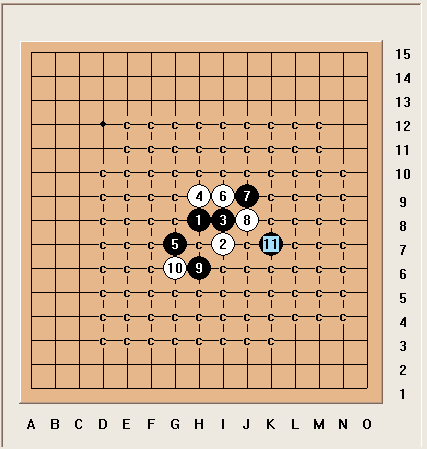
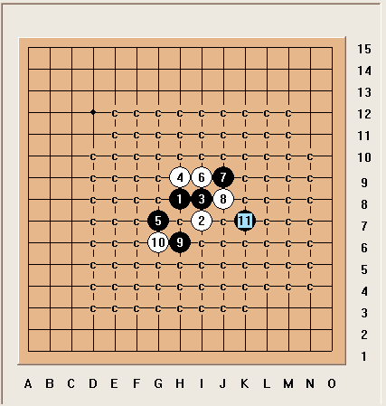
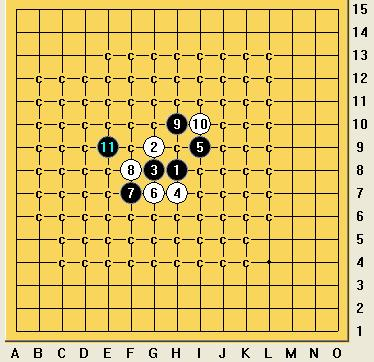

求斜月最强 点……
首页
五子棋交流
#1 求斜月最强 点…… 作者：裁决殿雪月 发表时间：2009-3-29 10:30:15
请问下面黑走哪个位置最强呢？10手让人头疼……
=======上图对应的爱五子棋谱代码如下，以便你拆解：========
h8g7i9h7f7f8e9g9g8i10
======================================================
#2 Re:求斜月最强 点…… 作者：裁决殿雪月 发表时间：2009-3-29 10:32:12
如果11手……哪下面感觉黑好像没棋了
=======上图对应的爱五子棋谱代码如下，以便你拆解：========
h8g7i9h7f7f8e9g9g8i10h10
======================================================
#3 Re:求斜月最强 点…… 作者：失落刀 发表时间：2009-3-29 10:37:06
2楼的走法必胜，好像。
#4 Re:求斜月最强 点…… 作者：裁决殿雪月 发表时间：2009-3-29 10:41:57
=======上图对应的爱五子棋谱代码如下，以便你拆解：========
h8g7i9h7f7f8e9g9g8i10h10g11
======================================================感谢楼上，不过我还是走不出……
#5 Re:求斜月最强 点…… 作者：失落刀 发表时间：2009-3-29 10:47:11
=======上图对应的爱五子棋谱代码如下，以便你拆解：========
h8h7i9g7f7f8e9g9g8i10h10g11g6
======================================================
#6 Re:求斜月最强 点…… 作者：wrwak 发表时间：2009-3-29 10:56:06
地毯谱
 1.rar
1.rar［ 失落刀 于 2009-3-29 11:01:15 时奖励此帖[金币加 20 威望加1］
［本站用户 裁决殿雪月 于 2009-3-29 12:13:53 花5个金币送您鲜花一朵］
#7 Re:求斜月最强 点…… 作者：wrwak 发表时间：2009-3-29 11:02:06
只发个分支的 原作者是空恨
#8 Re:求斜月最强 点…… 作者：裁决殿雪月 发表时间：2009-3-29 12:17:26
原来此变化 通云月二打……汗~~ 非常感谢
#9 Re:求斜月最强 点…… 作者：裁决殿雪月 发表时间：2009-3-29 12:28:36

#10 Re:求斜月最强 点…… 作者：裁决殿雪月 发表时间：2009-3-29 12:30:37
地毯.rar
原作者空恨
#11 Re:求斜月最强 点…… 作者：刀魂 发表时间：2009-3-29 19:29:16
晕s 次6早都地毯啦，而且杀的干干净净
#12 Re:求斜月最强 点…… 作者：淡薄云天 发表时间：2009-3-31 23:31:38
学习中！
=======上图对应的爱五子棋谱代码如下，以便你拆解：========
h8f7i6i4f4f10
======================================================